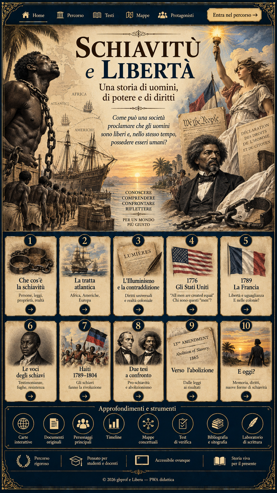

Schiavitù e libertà — Una storia di uomini, potere e diritti

HomePercorsoTestiMappeProtagonistiEntra nel percorso1. Che cos’è la schiavitù2. La tratta atlantica3. L’Illuminismo e la contraddizione4. 1776 — Gli Stati Uniti5. 1789 — La Francia6. Le voci degli schiavi e degli ex schiavi7. Haiti 1791–18048. Due tesi a confronto9. Verso l’abolizione10. E oggi?Carte interattiveDocumenti originaliPersonaggi principaliTimelineMappe concettualiTest di verificaBibliografia e sitografiaLaboratorio di scritturaConoscere · comprendere · confrontare · riflettere
Il percorso in dieci lezioni
Come può una società proclamare che gli uomini sono liberi e, nello stesso tempo, possedere esseri umani?
Collegamento: «Libertà per chi?» nella PWA sulla Rivoluzione americana →
01Che cos’è la schiavitùQuando la legge consente di possedere una personaApri lezione →02La tratta atlanticaUna rete di economie costruita sulla deportazioneApri lezione →03L’Illuminismo e la contraddizioneDiritti universali, applicazioni selettiveApri lezione →041776 — Gli Stati UnitiLibertà dichiarata, compromessi costituzionaliApri lezione →051789 — La FranciaL’universalità arriva fino alle colonie?Apri lezione →06Le voci degli schiavi e degli ex schiaviDall’esperienza vissuta all’azione politicaApri lezione →07Haiti 1791–1804Dalla rivolta alla difficile costruzione della libertàApri lezione →08Due tesi a confrontoLeggere gli argomenti, interrogare le proveApri lezione →09Verso l’abolizioneDalle leggi alla libertà effettivaApri lezione →10E oggi?Riconoscere l’esclusione senza confondere le epocheApri lezione →
Approfondimenti e strumenti
Carte interattive →Documenti originali →Personaggi principali →Timeline →Mappe concettuali →Test di verifica →Bibliografia e sitografia →Laboratorio di scrittura →
Porta il percorso con te
Preparazione dei materiali offline…
Su iPad: apri in Safari, scegli Condividi → Aggiungi alla schermata Home. Le fonti esterne richiedono connessione.
Nota sulla copertina: l’immagine fornita riporta Haiti 1789–1804; il percorso usa 1791–1804 per la rivoluzione haitiana. Il 1789 è l’inizio della Rivoluzione francese.